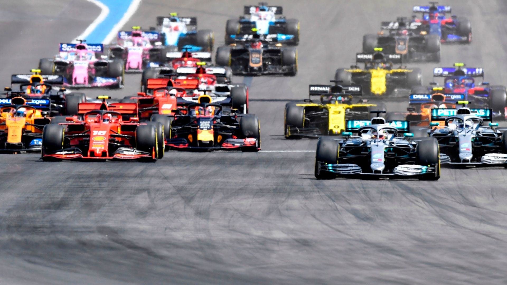

formula 1 racing website
Fernando Alonso Díaz born 29 July 1981 is a Spanish racing driver and former Formula One racing driver. He is a two-time Formula One World Champion and is often regarded as one of the greatest Formula One drivers in the history. He has contested 17 seasons of Formula One. Outside Formula One, Alonso won the 2018–19 FIA World Endurance Championship with Toyota Gazoo Racing. He won the 2018 24 Hours of Le Mans at his first attempt and won the race again in 2019. He won the 2019 24 Hours of Daytona, after his debut in 2018.
Sebastian Vettel born 3 July 1987 is a German racing driver who races in Formula One for Scuderia Ferrari. He is a four-time Formula One World Champion, having won consecutive titles from 2010–2013 with Red Bull Racing, and is regarded by many as one of the greatest drivers in the sport.
Daniel Joseph Ricciardo born 1 July 1989 is an Australian racing driver who is currently competing in Formula One for the Renault F1 Team. He entered Formula One as a test driver for Scuderia Toro Rosso and made his debut at the 2011 British Grand Prix with the HRT team as part of a deal with Red Bull. He then raced for Toro Rosso for the 2012 and 2013 seasons
The Honda powered MP4/4 is one of the most dominant Formula One cars ever built, winning all but one race and claiming all but one pole position in the 1988 season. Statistically the car holds the record as the most dominant single season car with a winning percentage of 93.8% with the closest any car has come was in 2016 when the Mercedes F1 W07 Hybrid won 19 of 21 races (90.5%).
The Red Bull RB9 is a racing car designed by Formula One racing team Infiniti Red Bull Racing. The car was driven throughout the 2013 Formula One season by (then) three-time World Drivers Champion Sebastian Vettel and teammate Mark Webber. Vettel would ultimately claim the Drivers' Championship title, for the fourth consecutive season, at the Indian Grand Prix, after ten wins during the season.

On its racing debut, the season-opening 2009 Australian Grand Prix, the team took pole position and 2nd place in qualifying and went on to finish first and second in the race. Button won six of the first seven races of the season and on 18 October at the Brazilian Grand Prix, he secured the 2009 Drivers' Championship and the team won the Constructors' Championship. Barrichello won twice and finished third in the Drivers' Championship. The team won eight of the season's seventeen races, and by winning both titles in its only year of competition became the first to achieve a 100% championship success rate.